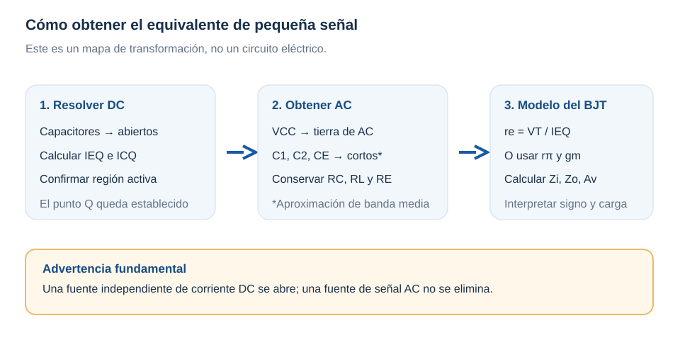
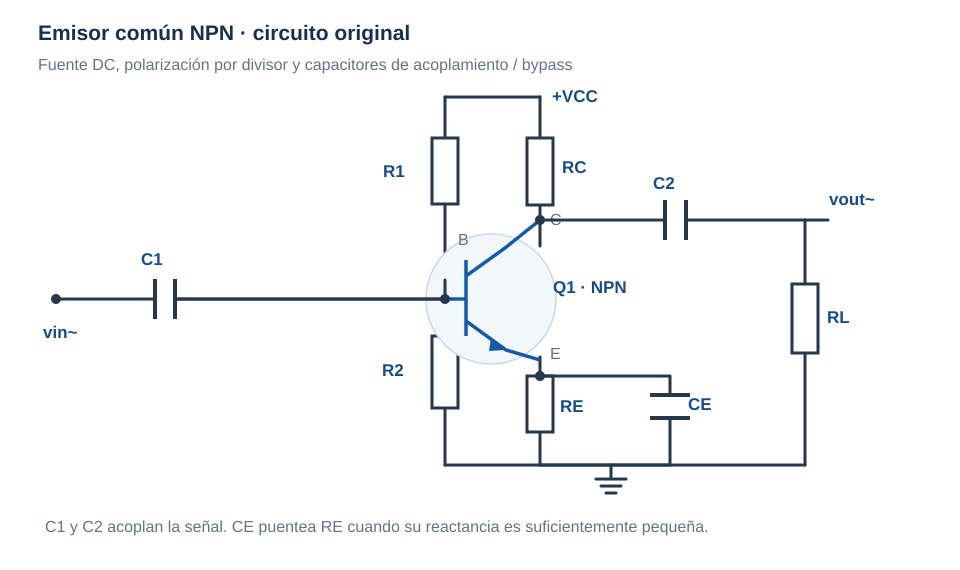
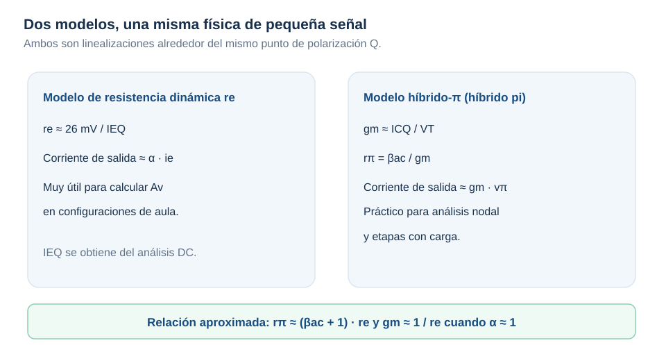
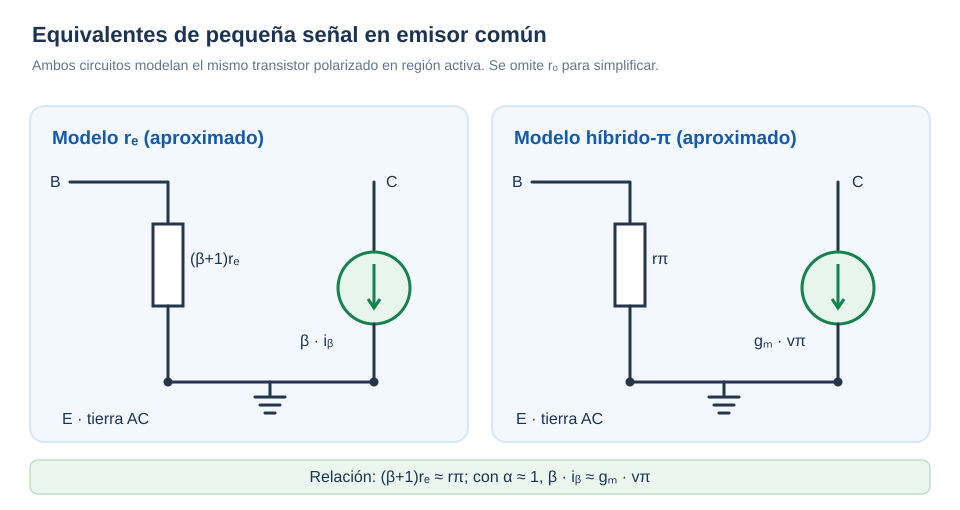
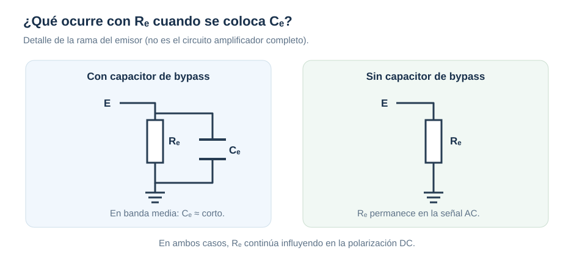
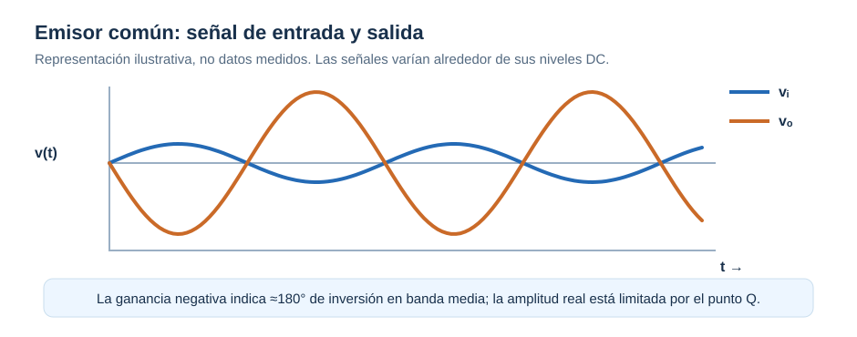
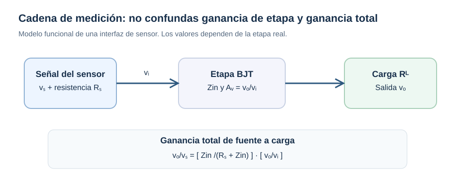

Del transistor polarizado al amplificador
Guía para estudiar paso a paso los modelos rₑ e híbrido-π. Con definiciones rigurosas, explicaciones cotidianas, esquemas y problemas resueltos para practicar antes del examen.
Ruta de preparación para el parcial
El objetivo no es memorizar veinte fórmulas, sino resolver un circuito completo con criterio. Al terminar debes poder: 1) obtener y comprobar el punto Q; 2) construir el equivalente AC; 3) hallar \(r_e\), impedancias y ganancia de cada configuración; 4) decidir cuándo usar \(r_e\) o híbrido-π; 5) comprobar si el resultado tiene sentido físico.
Plan de estudio sugerido: lee las secciones 1–4, reproduce los cálculos de las secciones 5–6, intenta dos problemas sin abrir la respuesta y completa las evaluaciones.
De la polarización DC a la amplificación de señales
En DC preguntábamos: “¿En qué punto trabaja el transistor?”. En AC la pregunta cambia: ¿cuánto cambia la salida cuando introduzco una señal pequeña? Ambas preguntas se necesitan: la segunda se responde alrededor del punto de operación Q encontrado con la primera.

Los seis pasos para construir el equivalente AC
El orden es deliberado. No comiences a sustituir \(r_e\) hasta tener clara la región de operación del circuito.
- Copiar el circuito original: marca \(V_{CC}\), resistencias, transistores, capacitores y carga.
- Resolver el punto Q en DC: para régimen permanente los capacitores ideales se consideran abiertos y se obtiene \(I_{EQ}\).
- Eliminar solo las fuentes DC independientes al obtener AC: una fuente de tensión ideal DC se convierte en tierra de AC (corto); una fuente independiente de corriente DC se abre.
- Aplicar el modelo de capacitores de banda media: acoplamientos y bypass con reactancia suficientemente pequeña se aproximan como cables.
- Insertar el equivalente del transistor: calcular \(r_e\) o los parámetros \(g_m\) y \(r_\pi\), según el modelo elegido.
- Calcular y comprobar: hallar impedancias, ganancia, inversión de fase, efecto de carga y condiciones de validez.

Comprueba la transformación antes de calcular
| Elemento | En DC, estado permanente | En AC, banda media | Pregunta de control |
|---|---|---|---|
| Fuente ideal VCC | Mantener el valor | Tierra de AC (corto) | ¿Es una fuente constante e independiente? |
| Capacitores de acoplamiento | Abiertos | Aproximadamente cortos | ¿Su reactancia es pequeña frente al circuito? |
| Capacitor de bypass CE | Abierto | Puente sobre RE | ¿Existe realmente y es suficiente para esa frecuencia? |
| Resistencias RC, RL, RS | Según la conexión física | Se mantienen | ¿Dónde queda el nodo a tierra de AC? |
| Transistor BJT | Calcular VCEQ, ICQ, IEQ | Modelo incremental | ¿El punto Q está en activa? |
Resistencia dinámica del emisor: modelo rₑ
La unión base-emisor es una unión PN, como la de un diodo, cuya curva corriente-tensión es no lineal. Cuando la corriente cambia ligeramente, la tensión de esa unión también cambia. Su relación incremental permite aproximar una resistencia dinámica.
Del diodo al transistor
\(V_T=kT/q\) es la tensión térmica; cerca de temperatura ambiente es aproximadamente \(25.9\,\mathrm{mV}\). Se utiliza \(26\,\mathrm{mV}\) por conveniencia didáctica. Usa siempre unidades consistentes: si divides 26 mV entre 2 mA, el resultado es 13 Ω.
Calcula \(r_e\) sin saltarte pasos
Se encontró en DC \(I_{EQ}=2\,\mathrm{mA}\) y el transistor está en activa.
- Escribe el dato: \(I_{EQ}=0.002\,\mathrm{A}\).
- Asume \(V_T\approx 0.026\,\mathrm{V}\) a temperatura ambiente.
- Divide: \(r_e=0.026/0.002\).
- Resultado: \(\boxed{r_e\approx13\,\Omega}\).
- Comprueba unidades: V/A = Ω y razona si al duplicar \(I_E\) se reduce a la mitad.
Calculadora exploratoria
Menor corriente → mayor rₑ.
Modelo rₑ o híbrido-π: puedes comparar ambos
Son dos descripciones equivalentes de la misma región activa, aunque cambian las variables más cómodas. No se trata de escoger uno “correcto” y otro “incorrecto”.


Modelo \(r_e\) — punto de partida
Ventajoso para aprender a calcular ganancia sin introducir demasiados parámetros simultáneamente.
Modelo híbrido-π — análisis nodal
El mismo resultado se obtiene para el emisor en AC a tierra: \(A_v\approx-g_m(R_C\parallel R_L)\).
Si \(I_{CQ}=1.98\,\mathrm{mA}\), \(I_{EQ}=2\,\mathrm{mA}\) y \(\beta_{ac}=100\):
Comprueba: \((\beta+1)r_e=101\cdot13=1313\,\Omega\), coherente con \(r_\pi\).
Emisor común: ganancia, fase y efecto de la carga
El emisor común (CE) se utiliza frecuentemente para amplificar tensión. Al aumentar la señal de base, aumenta la corriente de colector, aumenta la caída en \(R_C\) y disminuye el voltaje de colector. De ahí sale el signo negativo de la ganancia.
Con emisor bypassado en banda media
Si \(r_o\) no se puede despreciar, aparece en paralelo con la resistencia efectiva de colector.
Con resistencia de emisor sin bypass
Son aproximaciones de aula que suponen \(r_o\) grande, transistor activo y que \(v_i\) se mide en la base; \(R_E\) representa la resistencia de emisor no puenteada en AC.


\(I_E=2\,mA\), \(R_C=3.3\,k\Omega\), \(R_L=10\,k\Omega\), \(r_o\) muy grande. A temperatura ambiente: \(r_e=13\,\Omega\).
- La carga en AC se une al colector: \(R_{C,eq}=3.3k\parallel10k=2.481\,k\Omega\).
- Con \(R_E\) bypassada: \(A_v\approx-2481/13=\boxed{-190.8}\).
- Si quedan \(220\,\Omega\) sin bypass: \(A_v\approx-2481/(13+220)=\boxed{-10.65}\).
- Interpretación: el signo “−” indica inversión de fase de 180° en banda media; la carga reduce la ganancia respecto a usar solamente \(R_C\).
- Advertencia: un valor grande de \(|A_v|\) no implica que el transistor pueda entregar cualquier amplitud sin recortar: hay que comprobar margen y linealidad.
Colector común y base común: cuándo aparecen
Colector común (CC) · Seguidor de emisor
Salida en emisor. No invierte fase; típicamente tiene \(A_v\) cercano a +1, impedancia de entrada alta e impedancia de salida relativamente baja.
Base común (CB)
Entrada por el emisor y base a tierra de AC; tiene impedancia de entrada baja, corriente de salida cercana a la de entrada y ganancia de tensión que puede ser mayor que uno sin inversión.
Primera decisión del parcial: ¿dónde entra y dónde sale la señal?
| Configuración | Entrada AC | Salida AC | Terminal común en AC | ¿Para qué es útil? |
|---|---|---|---|---|
| Emisor común (CE) | Base | Colector | Emisor | Elevar tensión de señales pequeñas, con inversión de fase |
| Colector común (CC) | Base | Emisor | Colector | Interfaz de impedancia para no cargar excesivamente la etapa previa |
| Base común (CB) | Emisor | Colector | Base | Entrada de baja impedancia y aplicaciones de alta frecuencia (tema posterior) |
La expresión “común” describe el terminal de referencia de señal AC, no necesariamente que esté conectado físicamente a tierra en el circuito DC.
Tabla comparativa para estudiar
| Configuración | Ganancia de tensión típica | Fase | Impedancia de entrada | Idea clave |
|---|---|---|---|---|
| Emisor común | Puede ser elevada | Invierte (−) | Media, depende de la polarización | Amplificación de tensión |
| Colector común | Cercana a +1 | No invierte (+) | Alta | Adaptación de impedancia |
| Base común | Puede ser elevada | No invierte (+) | Baja | Entrada por emisor |
Simulador exploratorio del modelo rₑ
Mueve las variables y comprueba el cambio en ganancia del emisor común. La herramienta aplica un modelo idealizado de banda media sin \(r_o\), sin limitación de amplitud y con los capacitores supuestos en corto.
Una resistencia de emisor sin bypass reduce |Av|.

Problemas guiados por configuración con pistas y verificación
No consultes la solución al principio. Intenta escribir tu procedimiento y abre una pista únicamente cuando sea necesario.
Problema A · Resistencia interna y unidades
Un BJT polarizado en activa tiene \(I_{EQ}=1.3\,mA\). Calcula \(r_e\) a 25 °C.
Pista 1 · ¿Qué corriente uso?
Pista 2 · Conversión
Resolución completa
Problema B · Emisor común, ganancia con carga
Para \(r_e=20\,\Omega\), \(R_C=2.2\,k\Omega\), \(R_L=2.2\,k\Omega\) y emisor bypassado, calcula \(A_v\).
Pista 1 · No ignores la carga
Pista 2 · Aplica la relación
Resolución completa
Problema C · Qué hace una resistencia de emisor sin bypass
Con los datos del problema B, ahora queda \(R_E=180\,\Omega\) sin bypass. ¿Cómo cambia \(A_v\)?
Pista 1
Resolución completa
Problema D · Conectar rₑ con híbrido-π
\(I_{CQ}=1\,mA\), \(\beta_{ac}=120\), \(V_T=26\,mV\). Calcula \(g_m\) y \(r_\pi\).
Pista 1
Resolución completa
Problema E · Identificar el error conceptual
Un estudiante elimina \(R_E\) del equivalente de AC de un CE aunque no hay capacitor de bypass. ¿Qué está mal?
Pista
Respuesta razonada
Problema F · Colector común (seguidor de emisor): ¿por qué la ganancia es cercana a 1?
Para un BJT polarizado en región activa con \(I_{EQ}=2\,mA\), \(R_E=1\,k\Omega\) y \(R_L=1\,k\Omega\), calcula \(r_e\), la resistencia efectiva de emisor y la ganancia aproximada desde la base. Supón condensadores de acoplamiento en cortocircuito en banda media, fuente de base ideal y \(\beta\) grande.
Pista 1 · Identificar la configuración
Pista 2 · Reglas previas
Resolución guiada y verificación
- \(r_e=26\,mV/2\,mA=13\,\Omega\).
- \(R'_E=1000\parallel1000=500\,\Omega\).
- En esta aproximación, \(A_v\approx R'_E/(R'_E+r_e)=500/513\approx\boxed{+0.975}\).
- Comprueba el resultado: es positivo (no invierte) y ligeramente menor que 1. La etapa sirve principalmente para adaptar impedancias, no para multiplicar mucho el voltaje.
Problema G · Base común: interpretar entrada pequeña y ganancia positiva
Para una etapa de base común con \(I_{EQ}=2\,mA\), \(R_C=2.2\,k\Omega\) y \(R_L=10\,k\Omega\), estima \(r_e\), resistencia efectiva del colector, ganancia de tensión desde el emisor y resistencia de entrada. Se desprecia \(r_o\), se considera \(\alpha\approx1\) y la base está a tierra de AC.
Pista 1 · ¿Dónde entra la señal?
Pista 2 · Carga equivalente
Resolución guiada y verificación
- \(r_e=26/2=13\,\Omega\) (mV/mA).
- \(R'_C=(2200\cdot10000)/(12200)\approx1803\,\Omega\).
- \(A_v\approx+1803/13\approx\boxed{+139}\), bajo las hipótesis del ejercicio.
- \(R_{in}\approx r_e\approx\boxed{13\,\Omega}\).
- Comprueba el resultado: la ganancia es positiva (no invierte), pero la impedancia de entrada es baja. Una fuente real con resistencia interna puede reducir mucho la ganancia global.
Problema H · Dos rutas, una respuesta: comparar rₑ e híbrido-π
Datos: \(I_{CQ}=1.5\,mA\), \(\beta_{ac}=100\), \(V_T=26\,mV\). Encuentra \(I_{EQ}\), \(r_e\), \(g_m\) y \(r_\pi\). Comprueba la relación entre modelos.
Pista 1 · Conecta las corrientes
Pista 2 · Calcula por rutas distintas
Resolución guiada y verificación
- \(I_{EQ}=1.5\cdot101/100=1.515\,mA\).
- \(r_e=26/1.515\approx\boxed{17.16\,\Omega}\).
- \(g_m=0.0015/0.026\approx\boxed{0.05769\,S}\).
- \(r_\pi=100/0.05769\approx\boxed{1.733\,k\Omega}\).
- Comprueba: \((\beta+1)r_e=101\cdot17.16\approx1733\,\Omega\), consistente con \(r_\pi\). No son dos transistores distintos; son dos representaciones aproximadas del mismo punto Q.
Del circuito con resistencias reales al valor de ganancia AC
En un amplificador emisor común NPN (como el esquema de la sección 02), se dispone de: \(V_{CC}=12\,V\), \(R_1=47\,k\Omega\), \(R_2=10\,k\Omega\), \(R_C=2.2\,k\Omega\), \(R_E=1\,k\Omega\), \(R_L=10\,k\Omega\), \(\beta=120\), \(V_{BE}=0.7\,V\). Los capacitores \(C_1,C_2,C_E\) son suficientemente grandes para aproximarse a cortocircuitos en banda media. Se supone pequeña señal y se desprecia \(r_o\).
- Paso 1 · Hallar el divisor DC. Calcula el circuito de Thévenin que alimenta la base: \(V_{TH}=12\cdot10/(47+10)=2.105\,V\) y \(R_{TH}=47k\parallel10k=8.246\,k\Omega\).
- Paso 2 · Hallar el punto Q. En activa se obtiene \(I_{EQ}\approx(V_{TH}-0.7)/[R_E+R_{TH}/(\beta+1)]\approx1.316\,mA\). Entonces \(I_{CQ}\approx\beta I_E/(\beta+1)=1.305\,mA\).
- Paso 3 · Confirmar región activa. \(V_E\approx1.316\,V\), \(V_C=12-I_C R_C\approx9.13\,V\), y \(V_{CE}\approx7.81\,V\). Esta polarización tiene margen para pequeñas variaciones.
- Paso 4 · Dibujar el equivalente AC. Sustituye \(V_{CC}\) por tierra de AC; \(C_1\) y \(C_2\) por cables; el capacitor \(C_E\) también puentea \(R_E\) en AC. R_E no desaparece del análisis DC.
- Paso 5 · Calcular la resistencia dinámica. \(r_e\approx26\,mV/1.316\,mA\approx19.8\,\Omega\). Debe salir en ohmios, no en kiloohmios.
- Paso 6 · Incluir la carga AC. \(R_C\parallel R_L=(2.2k\cdot10k)/(2.2k+10k)\approx1.803\,k\Omega\).
- Paso 7 · Calcular la ganancia de tensión. \(A_v\approx-(R_C\parallel R_L)/r_e=-1803/19.8\approx\boxed{-91}\). Es una ganancia incremental desde la tensión de base hacia la salida, no incluye una resistencia interna de fuente.
- Paso 8 · Interpretar y cuestionar. El signo menos indica inversión de fase. La ganancia elevada no significa que una señal de entrada grande pueda amplificarse sin recorte; revisa siempre amplitud y margen del punto Q.
Casos integradores aplicados para el parcial
No son transcripciones de los libros. Son situaciones didácticas originales construidas con los métodos de sus capítulos. En cada problema identifica primero el tipo de etapa, sus hipótesis y la magnitud que te piden. La solución se abre de manera progresiva.
Problema I · Acondicionamiento de un sensor industrial: polarización DC, ganancia AC y resistencia de fuente
Situación. La salida pequeña de un transductor industrial se aplica a un amplificador CE con polarización por divisor. Se desea estimar cuánto voltaje llega a la entrada y cuánto aparece en una carga de monitoreo.
Datos: \(V_{CC}=15V\), \(R_1=56k\Omega\), \(R_2=12k\Omega\), \(R_C=3.3k\Omega\), \(R_E=1.2k\Omega\), \(R_L=6.8k\Omega\), \(\beta_{ac}=\beta_{DC}=100\), \(V_{BE}=0.7V\), \(V_T=26mV\). El capacitor de bypass de emisor actúa como cortocircuito solo en AC de banda media. El sensor se modela como \(v_s=10mV\) pico con \(R_s=2.2k\Omega\). Se desprecia \(r_o\).
Pista 1 · Empieza por el punto Q
Pista 2 · Calcula las dos ganancias distintas
Resolución paso a paso + comprobación física
- Thévenin de la base. \(V_{TH}=15(12/68)=2.647V\); \(R_{TH}=56k\parallel12k=9.882k\Omega\).
- Polarización. \(I_{EQ}=(V_{TH}-0.7)/(R_E+R_{TH}/(\beta+1))\approx1.500mA\). \(I_{CQ}\approx100/101\cdot I_E=1.485mA\).
- Región activa. \(V_E\approx1.800V\), \(V_C=15-I_C R_C\approx10.10V\), \(V_{CE}\approx8.30V\): la hipótesis es consistente en DC.
- Rama incremental. En AC la alimentación es tierra, los capacitores suficientemente grandes son cortos y \(R_E\) queda puenteada. \(r_e=26mV/1.500mA\approx17.3\Omega\).
- Carga del colector. \(R'_C=R_C\parallel R_L\approx2.222k\Omega\). Así \(A_v\approx-R'_C/r_e\approx-128.2\).
- Carga al sensor. \(Z_{in,b}\approx(\beta+1)r_e\approx1.75k\Omega\). Con el divisor DC conectado a tierra de AC, \(Z_{in}=R_1\parallel R_2\parallel Z_{in,b}\approx1.49k\Omega\).
- Ganancia total. \(v_i/v_s=1.49/(2.2+1.49)\approx0.403\), \(v_o/v_s\approx-51.7\). Para \(v_s=10mV\) pico, \(v_o\approx-0.517V\) pico.
- Verifica. El punto Q permite aproximadamente 4.90 V de excursión ascendente de colector antes de acercarse a la alimentación: 0.517 V pico es menor. El resultado sigue siendo una aproximación de pequeña señal.
Problema J · Seguidor de emisor para una señal de monitoreo: adaptar impedancias
Situación. Un sensor de alta impedancia debe entregar su voltaje a una carga sin perderlo excesivamente. Se añade un colector común (seguidor de emisor). Compara la ganancia propia del seguidor y la ganancia desde el sensor.
Datos de aula: \(I_{EQ}=2mA\), \(\beta_{ac}=100\), \(R_E=1k\Omega\), \(R_L=1k\Omega\), \(R_s=10k\Omega\), \(v_s=100mV\) pico; \(V_T=26mV\). Se desprecia la red de polarización para estimar \(Z_{in}\), y la fuente no entrega corriente DC a la base.
Pista · El seguidor no se analiza con la fórmula inversora del CE
Solución guiada + interpretación
- Identifica CC: entrada base, salida emisor, colector a tierra AC; fase no invertida.
- \(r_e=26mV/2mA=13\Omega\).
- \(R'_E=1k\parallel1k=500\Omega\).
- Ganancia base–salida: \(A_{v,b}=500/(500+13)=+0.975\).
- Impedancia de entrada en base: \(Z_{in,b}\approx(\beta+1)(R'_E+r_e)=101(513)\approx51.8k\Omega\).
- Divisor con sensor: \(v_i/v_s=51.8/(51.8+10)=0.838\).
- Ganancia desde sensor: \(v_o/v_s\approx0.975(0.838)=+0.817\). Por tanto \(v_o\approx81.7mV\) pico.
- Interpretación: no se busca una ganancia de tensión mayor que uno; se quiere una entrada que cargue menos a la fuente y una salida de menor impedancia.
Problema K · Una fuente de baja impedancia a una etapa de base común
Situación. Una etapa recibe una señal por el emisor; la base está desacoplada a tierra de AC. La impedancia interna del sensor es relevante.
Datos: \(I_{EQ}=2mA\), \(R_C=2.2k\Omega\), \(R_L=10k\Omega\), \(R_s=20\Omega\), \(v_s=1mV\) pico; \(\alpha\approx1\), \(r_o\) despreciable, banda media.
Pista · Distancia entre ganancias
Solución guiada + contraste
- Identifica CB: entrada emisor, salida colector, base a tierra AC.
- \(r_e=26mV/2mA=13\Omega\).
- \(R'_C=2200\parallel10000=1803\Omega\).
- Ganancia interna \(A_v\approx+1803/13=+138.7\).
- Divisor de entrada: \(v_e/v_s\approx13/(20+13)=0.394\).
- Ganancia total \(v_o/v_s\approx+54.6\), así que \(v_o\approx54.6mV\) pico.
- Revisión crítica: elegir \(A_v=+138.7\) como ganancia desde el sensor sin mirar \(R_s\) sobrestima la salida. Es correcto que la ganancia de la etapa sea positiva, aunque la entrada sea de muy baja impedancia.
Problema L · Capacitor de acoplamiento: ¿cuándo se aproxima de verdad a un cable?
Situación. Una cadena de instrumentación cambia de frecuencia y un capacitor de acoplamiento deja de comportarse como corto. Evalúa si la simplificación de banda media es válida.
Datos: \(C=1\,\mu F\); frecuencias de estudio \(f_1=100Hz\) y \(f_2=10kHz\); resistencia característica de comparación \(R=1k\Omega\). No se incluyen otras reactancias.
Pista · Reactancia capacitiva
Resolución con justificación
- Convierte unidades: \(C=10^{-6}F\).
- A 100 Hz: \(|X_C|=1/(2\pi100\cdot10^{-6})\approx1592\Omega\).
- A 10 kHz: \(|X_C|\approx15.9\Omega\).
- Compara: a 100 Hz \(|X_C|\) es mayor que 1 kΩ; no debe sustituirse alegremente por un cable. A 10 kHz, 15.9 Ω es mucho menor que 1 kΩ: aproximación más razonable para este elemento.
- Conclusión: la regla de cortocircuitar capacitores solo describe una banda de frecuencias y debe justificarse con magnitudes.
Problema M · Dos etapas: preamplificador CE y seguidor CC
Situación. Una tarjeta acondiciona una señal mediante una etapa CE que aumenta el voltaje y otra CC que adapta impedancias. ¿Por qué no debes calcular la primera etapa usando solo \(R_C\)?
Datos para un análisis de banda media: la etapa CE tiene \(r_{e1}=20\Omega\), \(R_{E1}=200\Omega\) sin bypass, \(R_{C1}=4.7k\Omega\). La impedancia de entrada completa de la etapa siguiente es \(Z_{in2}=10k\Omega\). El seguidor tiene \(r_{e2}=13\Omega\) y \(R'_{E2}=500\Omega\). Se ignoran otras cargas y \(r_o\).
Pista · Carga interetapa
Solución paso a paso
- Para la etapa CE, \(R'_{C1}=4.7k\parallel10k\approx3.197k\Omega\).
- Ganancia de CE con degeneración: \(A_{v1}\approx-3197/(20+200)=-14.53\).
- Ganancia del seguidor CC: \(A_{v2}\approx+500/(13+500)=+0.975\).
- Ganancia compuesta: \(A_{v,total}=A_{v1}A_{v2}\approx-14.17\).
- La salida global invierte la fase porque solo una de las dos etapas invierte.
- Si se hubiera ignorado la carga de la segunda etapa, la primera daría \(-4700/220=-21.36\): un valor inflado.
- Comprobación: si la señal de entrada de la primera etapa es 10 mV pico, la salida idealizada es aproximadamente 142 mV pico, siempre que ambas etapas permanezcan en pequeña señal.
Autoevaluación del módulo AC
El cuestionario de repaso toma 10 preguntas al azar de un banco dedicado al BJT en AC. La retroalimentación aparece tras cada respuesta y puedes intentar una nueva selección.
Reto de cálculo: comprueba si realmente sabes resolver
Antes del cuestionario de selección múltiple, resuelve 4 preguntas numéricas generadas con datos diferentes en cada intento. Escribe un número sin unidades (se muestran a la derecha). Si te equivocas, la retroalimentación recuerda el primer paso para retomarlo.
Preparando práctica numérica…
Las preguntas permiten repetir y practicar; no sustituyen la evaluación institucional.
Lecturas de los tres libros guía
Electrónica: teoría de circuitos y dispositivos electrónicos, 10.ª ed. Cap. 5, “Análisis de ca de un BJT”, pp. impresas 246 en adelante. Prioriza el modelo \(r_e\), configuraciones CE/CC/CB, y dedica apartados al efecto de la carga \(R_L\) y de \(R_s\) (§5.13, p. 281), etapas en cascada (§5.16, p. 294) y modelo híbrido-π (§5.22, p. 329).
Principios de Electrónica, 7.ª ed. Cap. 9, “Modelos de alterna” (p. 268), incluido el origen de la resistencia incremental; cap. 10, “Amplificadores de tensión” (p. 298), efectos de carga y resistencia de emisor sin desacoplar; cap. 11, “Amplificadores en colector común y en base común”.
Electrónica Analógica para Ingenieros (2009). Módulo I: tema 3, “El transistor bipolar” (polarización); tema 5, “Análisis de circuitos amplificadores”, desde p. 53; tema 6, “Análisis en pequeña señal con el BJT”, desde p. 69. El libro incluye también problemas resueltos relacionados con el tema 6 desde p. 251.